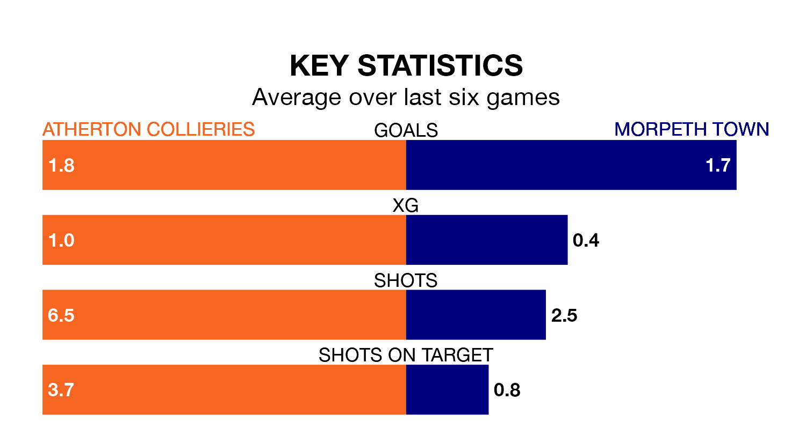

Morpeth Town are strong favourites to take all three points despite Atherton Collieries's home advantage in Saturday's match.
*Betting Company* are offering odds of 1.73 on Morpeth sealing the win, with the visitors sitting 11th in Northern Premier League table.
Atherton Collieries, who are 22nd in the league and 26 points behind Morpeth, are priced at 3.5 to win. A draw is set at 4.
With 31 goals in 26 games so far this season, Atherton Collieries are scoring at below the league average rate with 1.2 goals per game. And they are conceding more than average, letting in 68 goals at a rate of 2.6 per game.
Morpeth, meanwhile, are above average scorers, with 1.9 goals per game, compared to a league average of 1.7. They have also conceded 1.9 goals per game.
In the last 10 years, Atherton Collieries and Morpeth have played each other on seven occasions. Atherton Collieries won one of them, Morpeth four, and they drew twice.
On average, Atherton Collieries scored 0.7 goals and Morpeth 2.3 in those matches.
Their last meeting was on February 11, when Morpeth won 3-0 at home.
The hosts are in bad form in Northern Premier League, with one win and a draw from their last six games.
With three wins and a draw over that period, Town's form is much better – they have taken 10 points from 18, compared to Atherton Collieries's four.
Atherton Collieries's last match was on January 27, a 4-3 loss against Ashton United.
Morpeth lost 5-1 against Hyde United last time out, also on January 27.
Updated: 10:40 (UTC), 01/02/24